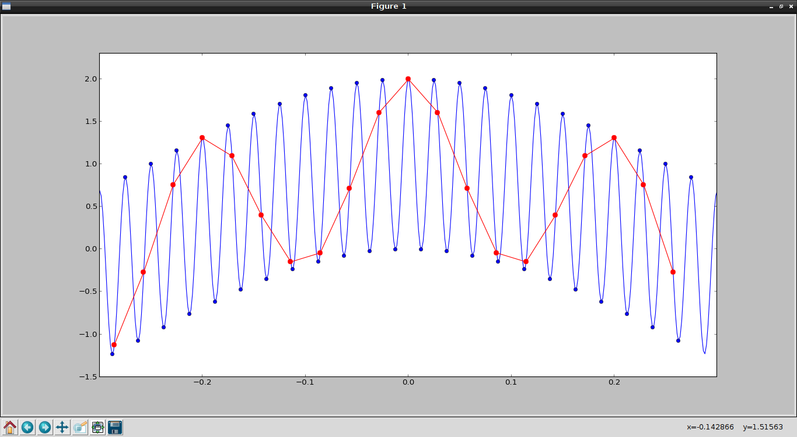
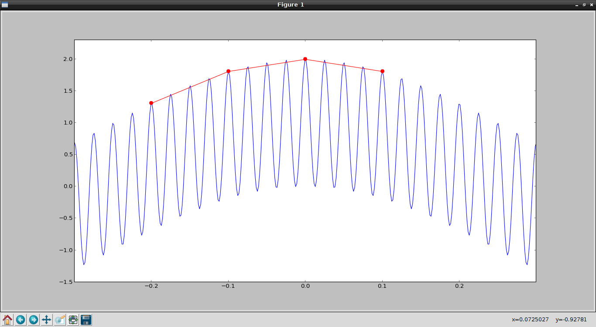
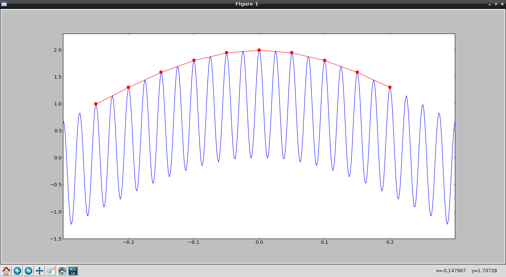
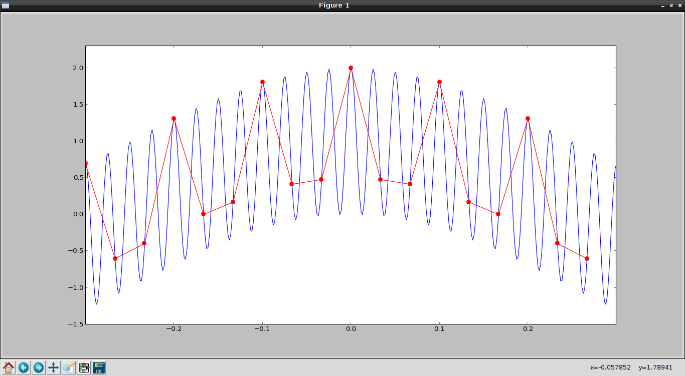
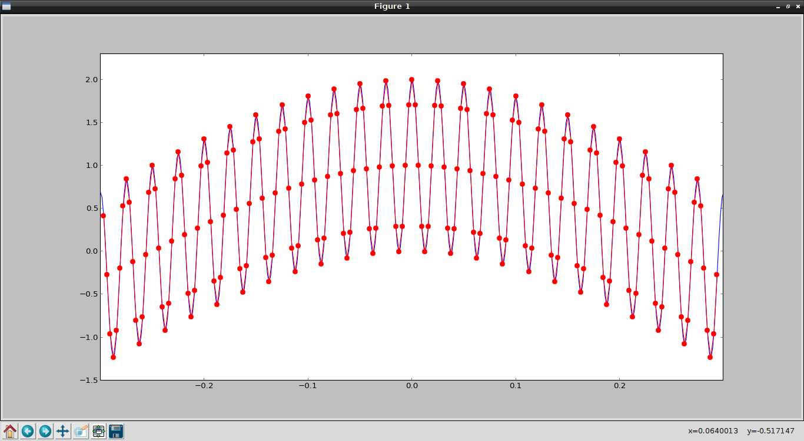

El teorema demuestra que la reconstrucción exacta de una señal periódica continua en banda base a partir de sus muestras, es matemáticamente posible si la señal está limitada en banda y la tasa de muestreo es superior al doble de su ancho de banda. En el artículo se mostrará una tasa de muestreo a diferentes frecuencias, desde el valor doble a la frecuencia base, luego a un valor menor.
Algo más de teoría: El teorema de muestreo de una señal continua que x (t) limitada en banda a B Hz pueden ser recuperados de sus muestras x [n] = x (n * T), donde n es un número entero, si T es mayor que o igual a 1 / (2B) sin pérdida de ninguna información. Y llamamos 2B la tasa de Nyquist.
El muestreo a una tasa inferior a la tasa de Nyquist se denomina submuestreo, se produce el efecto aliasing.
Si se desea más información sobre el Teorema de Muestreo se puede consultar a wikipedia.
Este artículo se basa en un artículo en Inglés "The sampling theorem explained with numpy".
El código se muestra a continuación:
#!/usr/bin/env python
#De numpy se importa lo necesario para graficar la
#funcion seno
from numpy import linspace,sin,cos,pi,ceil,floor,arange
#De pylab se importa plot, show y axis. Lo necesario para crear
#la grafica
from pylab import plot,show,axis
#Muestreo de una seganl de ancho de banda 40 hz
# con velocidad de muestreo de 80 Hz
f = 40; # Hz
#Tiempo minimo y maximo
tmin = -0.3;
tmax = 0.3;
#Se define el tiempo de la segnal.
t = linspace(tmin, tmax, 400);
#Se define la segnal de muestreo
x = cos(2*pi*t) + cos(2*pi*f*t)
#Se grafica el tiempo y la segnal.
plot(t, x)
# sampling the signal with a sampling rate of 80 Hz
# in this case, we are using the Nyquist rate.
#Muestreo de la segnal con una velocidad de muestreo de 80 Hz.
#Periodo de muestreo
T = 1/80.0;
#Tiempo minimo
nmin = ceil(tmin / T);
#Tiempo maximo
nmax = floor(tmax / T);
#Tiempo de la segnal.
n = arange(nmin,nmax);
#Segnal a la velocidad de muestreo
x1 = cos(2*pi*n*T) + cos(2*pi*f*n*T);
#Se grafica la segnal.
plot(n*T, x1, 'bo')
#Muestreo de la segnal con una velocidad de muestreo de 35Hz.
#Note que 35Hz esta por debajo de la velocidad de Nyquist.
T = 1/35.0;
nmin = ceil(tmin / T);
nmax = floor(tmax / T);
n = arange(nmin,nmax);
x2 = cos(2*pi*n*T) + cos(2*pi*f*n*T);
plot(n*T, x2, '-r.',markersize=15)
axis([-0.3, 0.3, -1.5, 2.3])
show()
La gráfica generada es la siguiente:

Con puntos azules se tiene el muestreo a 80Hz, con puntos rojos se tiene el muestreo a 35 Hz, se nota que el muestreo a 80 Hz es suficiente para capturar la oscilación de la señal.
En la siguiente gráfica se tiene un muestreo a 10 Hz que está por debajo de la frecuencia base de la señal (40 Hz).

Ahora se muestra la frecuencia de muestreo a 20 Hz:

Para terminar se muestra la frecuencia de muestreo a 30 Hz:

Para terminar se muestra la gráfica a una frecuencia de muestreo de 320 Hz:

Como puede notarse, mientras menor es la frecuencia de muestreo con respecto a la frecuencia base de la señal no se puede generar la señal original a partir de la muestra, mientras se va a aumentando la señal hasta llegar a la frecuencia base, se nota que se tiene más muestras para dicha recuperación pero sigue sin ser suficiente, es a partir del doble de la frecuencia base que la muestra puede ser generada.
¡Haz tu donativo! Si te gustó el artículo puedes realizar un donativo con Bitcoin (BTC) usando la billetera digital de tu preferencia a la siguiente dirección: 17MtNybhdkA9GV3UNS6BTwPcuhjXoPrSzV
O Escaneando el código QR desde la billetera:

Comments !